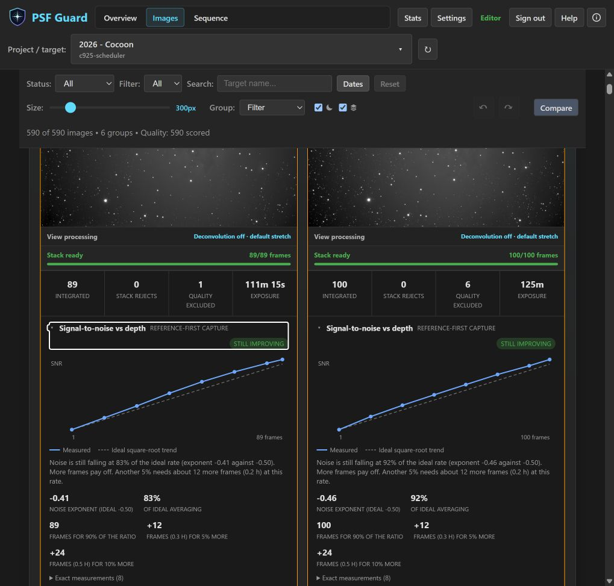
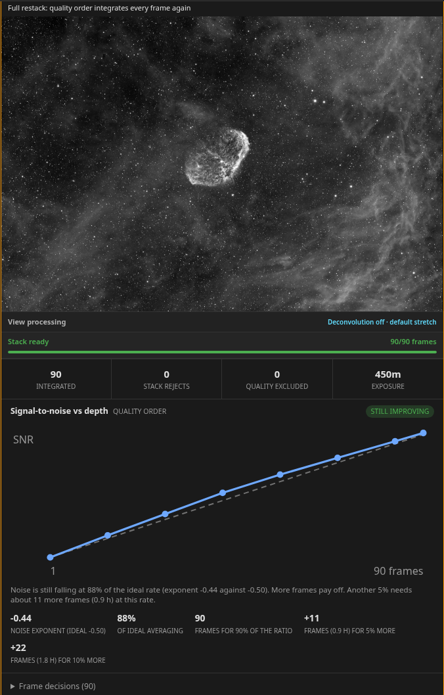

Stack Previews
You can check an integration before starting full processing by using PSF Guard to stack the graded frames of a target inside the grader. This preview is calibrated per channel, displayed in color, and reflects your current grades and sequence checks.
The system generates per-channel previews from graded frames.
From the project stack panel, PSF Guard integrates the selected or visible frames for each target and filter using Seiza registration. The selection policy runs before registration. Catalog rejects and sequence-analysis regrade recommendations are excluded before registration, so the preview shows how the accepted data stacks. The latest successful result for each channel is stored in the cache, and rebuilding one channel does not discard the others.


You can select calibration options for each stack or channel.
The stack panel can build bias, dark, dark-flat, and flat masters from the catalog matching library. The Auto setting applies only masters with a valid dependency chain. The Force on setting applies every master it can build and warns about potential issues, while the Off setting integrates raw lights. The project-level choice is saved, and you can override it on individual target or filter cards.
Multi-night stacks are divided into calibration sessions when the lights require different flats or darks, and the system swaps masters as each group is integrated. If a master fails to build, the stack integration continues. The card lists which master was skipped and why, continues with the valid masters, and records the applied set in the session metadata.
You can open the Calibration Libraries page to read about calibration imports and rules. This page covers import procedures, hard matching rules, flats-only pedestal handling, hot-pixel safeguards, master caching, and sky-flat advice.

You can build stack previews for an entire night without manual intervention.
Build buttons remain active while a build is running. Each click adds a channel to the queue. Each card shows its current queued or active state, and the status line displays the number of waiting jobs. The Stop button ends the active build, and the button changes to Stop all when a queue exists. Stopping a build occurs between frames, channels, or calibration masters, which means the process completes within the time it takes to process a single frame. The system does not write incomplete outputs. If you stop a channel before the FITS file and preview are written, the system leaves no partial files, and previously completed channels are preserved.
Because the queue is efficient, a rebuild that only adds frames resumes from the last completed frame instead of reintegrating the entire night, and the card displays the number of restored frames. The system only reuses a checkpoint when it is a direct ancestor of the new set. This requires identical source fingerprints for every frame, the same calibration settings, the same Accepted-only policy, and the same pipeline version. If any of these parameters change, the system rebuilds the stack from scratch and indicates the changed parameters on the card.
A build job runs on the server rather than the browser tab that started it. The header displays a Stacking indicator while any mono or color build is queued or running across any view or database. The panels automatically reconnect to the active job when they mount. You can navigate away from the grid or reload the page without losing progress. Superseded artifacts are automatically removed from the cache.
The system shows when additional frames no longer improve quality.
Each mono build measures the signal-to-noise ratio against stack depth at several stack sizes. The solid line represents the measured signal-to-noise ratio. If all accepted frames have the same exposure length, a dashed line shows the theoretical gain expected from ideal averaging. If exposure lengths differ or are not recorded, PSF Guard displays only the measured curve without estimating future gains.


The Order control determines how frames are added to the stack:
- The Capture sequence option adds frames in the order they were captured and uses a single high-quality frame for registration. This option helps estimate if similar data from another session will improve the stack.
- The Quality option adds the highest-ranked frames first. This option helps determine if lower-quality frames still contribute to stack quality. The system rebuilds the stack because new frames may alter the quality ranking.
When the system gathers sufficient measurements, the card displays a verdict of Still improving, Diminishing returns, Plateau, or Getting worse. It also estimates how many additional frames are required to improve the signal-to-noise ratio by 5% or 10%. If there is insufficient data, the card displays the measurements without a verdict. You can collapse the chart, and the heading will still display the order and verdict.
PSF Guard saves this measurement in the stack sidecar and the resume checkpoint. It also writes the SNRORDER, SNRNOISE, SNRVALUE, SNRSLOPE, and SNRVERDT headers to the FITS file. You can use the stack-snr command-line tool to measure a directory of files without creating a catalog.
You can inspect, stretch, and download previews at full resolution.
The preview opens in the primary inspector, which supports zooming, panning, scaling to fit, and pixel-to-pixel viewing. The display stretch is a parameterized Seiza stretch that you can adjust or revert without recalculating the integration. The cached result remains linear, allowing you to download it as a FITS file and import it directly into external processing applications.


The system aligns all channels to the same orientation.
A German equatorial mount rotates the field by 180 degrees during a meridian flip. Registration matches star patterns at any angle to ensure both halves of a session stack correctly, but the reference frame determines the orientation of the output. If you capture filters in blocks across the meridian, two channels of the same target could have opposite orientations.
PSF Guard coordinates orientation using sky coordinates. If a cached plate solve or a valid WCS header is present on the reference frame, the system determines which way north points and publishes the stack with north in the upper half of the frame. If sky coordinates are unavailable, the system reads the PIERSIDE header, interpreting it based on any solved channels in the same build. If both methods fail, the system adopts the orientation used by the majority of the exposure time in the stack. This operation does not run an active plate solve and only performs a 180-degree rotation, which preserves the camera angle without resampling.
You can combine channels using LRGB and narrowband color palettes.
When the required channel stacks exist, you can combine them without rebuilding the underlying integrations. PSF Guard detects L, R, G, B, Ha, OIII, and SII filters from the saved mono stacks, registers the filters to the luminance or H-alpha reference, and applies the Seiza color combiners. The available palettes include SHO, SOH, HSO, HOS, OSH, OHS, HOO, Foraxx-SHO, and Foraxx-HOO. Targets without SII data display only the HOO variants.


Rebuilding source channels marks the associated color results as outdated but does not hide them, which indicates when a combination does not reflect the current channel data. Color outputs are cached with complete metadata including source jobs, palette, policy, and Seiza revision. The system saves these as screen-stretched and native PNG files, alongside an RGB 32-bit floating-point FITS file whose header records the palette and transfer semantics.
The system can trim edge artifacts caused by registration.
Registering channels to one another can leave blank margins where the frames do not overlap completely. Each color card contains an Edges setting that allows you to keep the margins, crop to the bounding box of all covered pixels, or crop to the largest rectangle shared by all channels. The default option preserves the existing behavior to keep current results valid.
This setting is stored with the job configuration, which means each job maintains its own cached files and applying a processing stack preserves the selected crop. The crop is applied before normalization, which ensures all channels scale from the same sky area, and the CRPIX coordinates are updated on the cropped grid to preserve the plate solution. The completed card shows the final dimensions and the percentage of the grid that was retained. If a channel has poor coverage due to a pointing error rather than dither, the card identifies the channel that limited the crop.
The system provides background extraction and processing controls.
The system fits and subtracts the background of each input channel before registering filters. This process uses Seiza background extraction and displays per-channel fit diagnostics. The editable processing stack provides additive or multiplicative correction controls and ordered stretch stacks for input and output channels, along with phase progress during execution.

You can enable optional deconvolution to sharpen previews.
Stack previews can apply Seiza deconvolution as an optional step to sharpen the image without altering the cached linear integration. Like the display stretch, deconvolution is a view setting that you can toggle, compare, or bypass when downloading the FITS file.
You can save and reuse named processing configurations.
You can save parameters in the View processing and Processing stack panels under a custom name. You can select a saved configuration, review its values in the editor, and apply the processing. Selecting a configuration does not trigger an immediate render.
A view configuration saves the display stretch and optional deconvolution settings. A color configuration saves background extraction, per-channel input processing, and output stretches. Applying a color configuration to a different target matches channels by name and leaves deconvolution disabled for channels not explicitly named in the configuration.
Saved configurations are available across all configured databases. You can manage, delete, import, or export configurations in Settings → Setups. Exports can contain a single configuration or the entire collection. Users on an authenticated server can list, apply, and export configurations, while creating, deleting, or importing configurations requires editor permissions.
The artifact finder identifies which source frame caused a defect.
Integrated stacks can make satellite trails, reflections, dust shadows, or hot pixels more visible than they are on individual subframes. You can open the full-resolution inspector, select Find source artifact, and draw a box around the affected region. PSF Guard maps the region through registration coordinates and ranks the source frames by how much they deviate from their peers in that area.

The results display the peak sigma value, the direction of the deviation as bright or dark, and a shape classification such as a compact spot, diagonal trail, defocused ring, or broad shadow. Results with low evidence remain unclassified. The search tool does not modify grades automatically; it identifies candidate frames for manual review. The tool cannot detect a defect that appears in the same registered position on every frame, as that defect becomes part of the baseline. The selected region must be at least 8 pixels per side, and selections larger than 512 pixels are capped at 512 pixels.
You can export the validated data for external stacking.
Once you verify the data quality using the preview, you can export the accepted lights and their matching calibration frames to your external stacking pipeline. Rejected frames are excluded from the export, and ungraded frames are optional. You can use the default target-grouped directory structure or select the WBPP layout, which generates PixInsight handoff scripts.
You can open the Export for Stacking guide to review export procedures. This guide covers desktop and browser workflows, command-line filters, repeat exports, API examples, and troubleshooting.